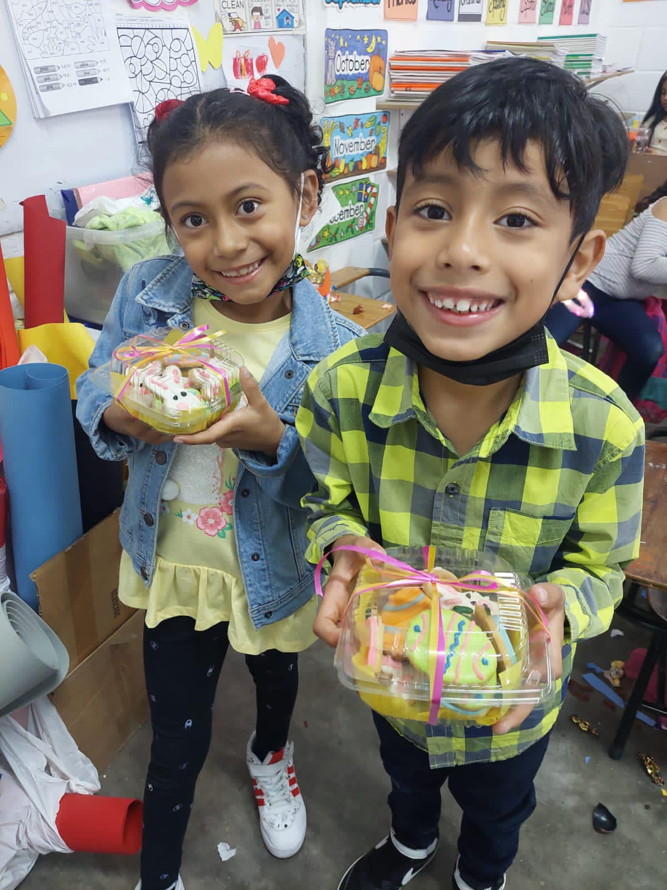

ACERCA DE
Desde su fundación, han graduado a más una docena de promociones y en cada una ellas sus alumnos han sonresalído en su rendimiento universitario. Actualmente, la Institución cuenta con un staff completo de maestros certificados, especialistas en su área de conocimiento, calificados para brindar clases presenciales y virtuales con un excelente resultado comprobado.
De forma constante, los maestros son capacitados individualmente o en grupo de manera presencial y virtual, por lo que siempre son actualizados oara poder hacer frente a los continuos cambios en el proceso de enseñanza - aprendizaje.
